Folha de contato: imagens reais de GTA VI
33 imagens escolhidas no kit de mídia oficial da Rockstar Games
(rockstargames.com/VI/media), baixadas direto do CDN da Rockstar (media-rockstargames-com.akamaized.net).
Todas são capturas do jogo; nenhuma tem logo, marca "VI" ou texto da Rockstar por cima. Cada uma foi
convertida para WebP em 1600 e 800 px de largura (16:9).
Hero 1
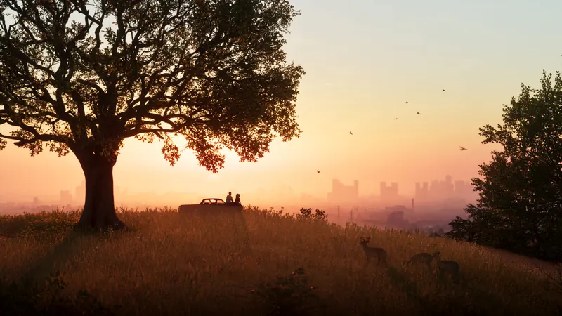
hero-jason-lucia-por-do-sol
Original: Jason_and_Lucia_16.jpg (3840×2160) · WebP 1600: 171 KB
Fonte: © Rockstar Games, kit de mídia oficial · rockstargames.com/VI/media · Capturas de tela (138)
alt: Pôr do sol alaranjado sobre uma colina de capim, com uma árvore grande em silhueta e um carro parado ao longe
Galeria horizontal 6
galeria-vice-city-noite
Original: Vice_City_27.jpg (3840×2160) · WebP 1600: 183 KB
Fonte: © Rockstar Games, kit de mídia oficial · rockstargames.com/VI/media · Capturas de tela (138)
alt: Prédios de Vice City iluminados à noite, vistos do alto, com um helicóptero sobre o centro
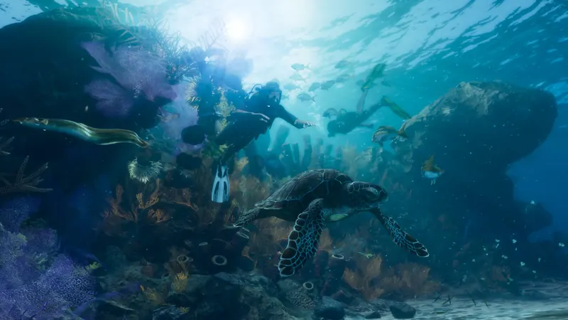
galeria-keys-mergulho
Original: Leonida_Keys_04.jpg (3840×2160) · WebP 1600: 95 KB
Fonte: © Rockstar Games, kit de mídia oficial · rockstargames.com/VI/media · Capturas de tela (138)
alt: Mergulhadores sob a água azul das Leonida Keys, ao lado de uma tartaruga marinha e de um navio afundado
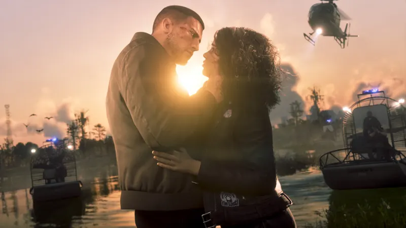
galeria-jason-lucia-abraco
Original: Jason_and_Lucia_13.jpg (3840×2160) · WebP 1600: 48 KB
Fonte: © Rockstar Games, kit de mídia oficial · rockstargames.com/VI/media · Capturas de tela (138)
alt: Jason e Lucia abraçados à beira d’água ao entardecer, com um helicóptero no céu
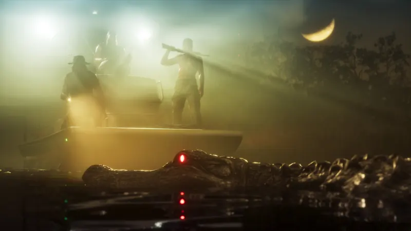
galeria-grassrivers-noite
Original: Grassrivers_08.jpg (3840×2160) · WebP 1600: 29 KB
Fonte: © Rockstar Games, kit de mídia oficial · rockstargames.com/VI/media · Capturas de tela (138)
alt: Lanterna iluminando um jacaré no pântano de Grassrivers à noite, sob a lua crescente
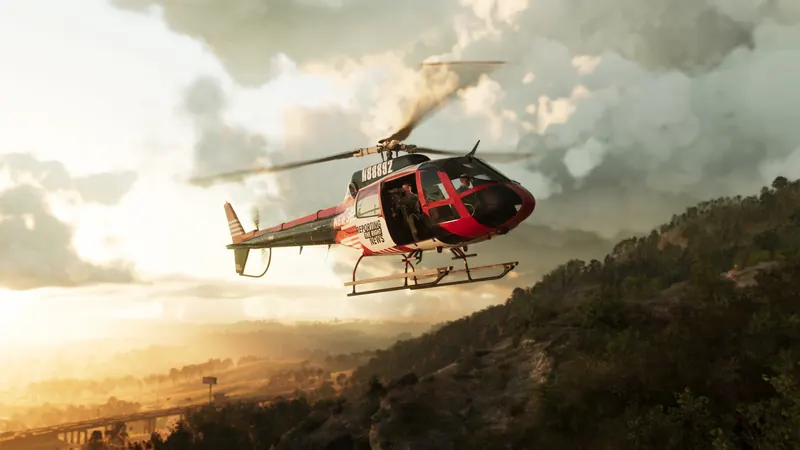
galeria-kalaga-helicoptero
Original: Mount_Kalaga_National_Park_02.jpg (3840×2160) · WebP 1600: 56 KB
Fonte: © Rockstar Games, kit de mídia oficial · rockstargames.com/VI/media · Capturas de tela (138)
alt: Helicóptero vermelho e branco sobrevoando a mata do Mount Kalaga com o sol baixo atrás
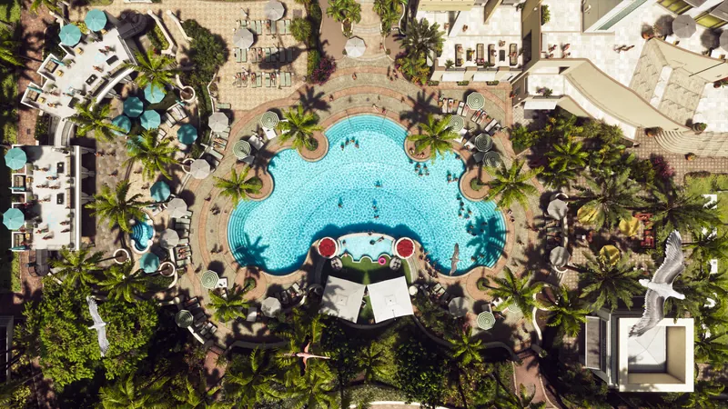
galeria-vice-city-piscina-aerea
Original: Vice_City_26.jpg (3840×2160) · WebP 1600: 321 KB
Fonte: © Rockstar Games, kit de mídia oficial · rockstargames.com/VI/media · Capturas de tela (138)
alt: Vista aérea de um hotel de Vice City com piscina azul cercada de palmeiras
Regiões 6
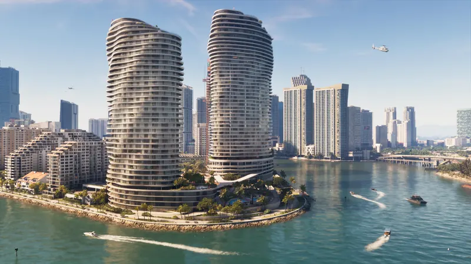
regiao-vice-city
Original: Vice_City_10.jpg (3840×2160) · WebP 1600: 148 KB
Fonte: © Rockstar Games, kit de mídia oficial · rockstargames.com/VI/media · Capturas de tela (138)
alt: Duas torres residenciais curvas na beira da baía de Vice City, com lanchas e jet skis na água
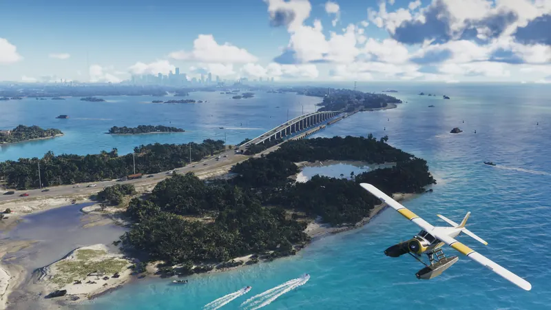
regiao-leonida-keys
Original: Leonida_Keys_01.jpg (3840×2160) · WebP 1600: 141 KB
Fonte: © Rockstar Games, kit de mídia oficial · rockstargames.com/VI/media · Capturas de tela (138)
alt: Vista aérea das Leonida Keys: ilhas verdes, mar turquesa, uma ponte longa e um hidroavião
regiao-grassrivers
Original: Grassrivers_05.jpg (3840×2160) · WebP 1600: 202 KB
Fonte: © Rockstar Games, kit de mídia oficial · rockstargames.com/VI/media · Capturas de tela (138)
alt: Pântano de Grassrivers com casas sobre palafitas e os prédios de Vice City no horizonte
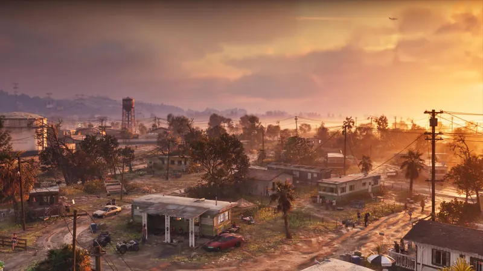
regiao-port-gellhorn
Original: Port_Gellhorn_06.jpg (3840×2160) · WebP 1600: 134 KB
Fonte: © Rockstar Games, kit de mídia oficial · rockstargames.com/VI/media · Capturas de tela (138)
alt: Cidade de Port Gellhorn vista do alto ao pôr do sol, com casas baixas e postos de gasolina
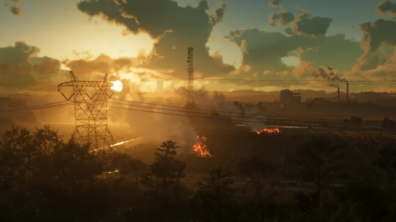
regiao-ambrosia
Original: Ambrosia_04.jpg (3840×2160) · WebP 1600: 55 KB
Fonte: © Rockstar Games, kit de mídia oficial · rockstargames.com/VI/media · Capturas de tela (138)
alt: Torres de energia e fábricas de Ambrosia ao pôr do sol, com fumaça no horizonte
regiao-mount-kalaga
Original: Mount_Kalaga_National_Park_04.jpg (3840×2160) · WebP 1600: 243 KB
Fonte: © Rockstar Games, kit de mídia oficial · rockstargames.com/VI/media · Capturas de tela (138)
alt: Estrada passando por um cânion de terra vermelha e mata no Mount Kalaga National Park
Personagens 8
personagem-jason-duval
Original: Jason_Duval_02.jpg (3840×2160) · WebP 1600: 58 KB
Fonte: © Rockstar Games, kit de mídia oficial · rockstargames.com/VI/media · Capturas de tela (138)
alt: Jason Duval de boné e regata, com o braço apoiado na janela de um carro, sob luz de fim de tarde
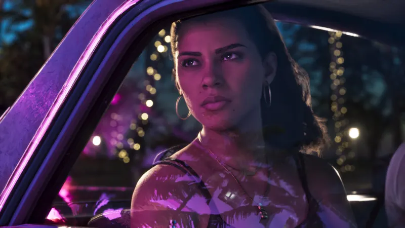
personagem-lucia-caminos
Original: Lucia_Caminos_10.jpg (3840×2160) · WebP 1600: 65 KB
Fonte: © Rockstar Games, kit de mídia oficial · rockstargames.com/VI/media · Capturas de tela (138)
alt: Lucia Caminos dentro de um carro à noite, com luzes de neon roxas refletidas no vidro
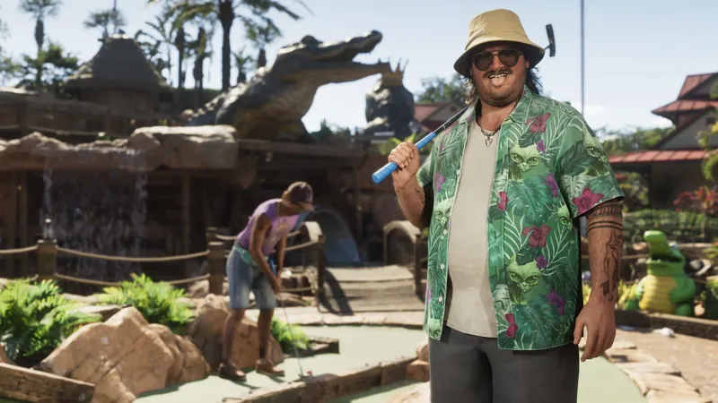
personagem-cal-hampton
Original: Cal_Hampton_01.jpg (3840×2160) · WebP 1600: 92 KB
Fonte: © Rockstar Games, kit de mídia oficial · rockstargames.com/VI/media · Capturas de tela (138)
alt: Cal Hampton de chapéu e camisa havaiana verde, em pé num minigolfe com um taco na mão
personagem-boobie-ike
Original: Boobie_Ike_01.jpg (3840×2160) · WebP 1600: 128 KB
Fonte: © Rockstar Games, kit de mídia oficial · rockstargames.com/VI/media · Capturas de tela (138)
alt: Boobie Ike sentado numa poltrona do escritório, de óculos escuros e camisa estampada
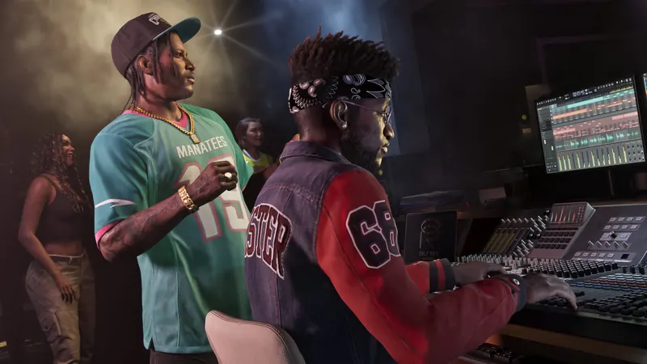
personagem-dre-quan-priest
Original: DreQuan_Priest_04.jpg (3840×2160) · WebP 1600: 100 KB
Fonte: © Rockstar Games, kit de mídia oficial · rockstargames.com/VI/media · Capturas de tela (138)
alt: Dre’Quan Priest num estúdio de gravação, ao lado da mesa de som
personagem-real-dimez
Original: Real_Dimez_04.jpg (3840×2160) · WebP 1600: 121 KB
Fonte: © Rockstar Games, kit de mídia oficial · rockstargames.com/VI/media · Capturas de tela (138)
alt: Bae-Luxe e Roxy, da dupla Real Dimez, gravando ao microfone num estúdio iluminado em rosa
personagem-raul-bautista
Original: Raul_Bautista_03.jpg (3840×2160) · WebP 1600: 74 KB
Fonte: © Rockstar Games, kit de mídia oficial · rockstargames.com/VI/media · Capturas de tela (138)
alt: Raul Bautista de braços cruzados no convés de um barco, com prédios ao pôr do sol atrás
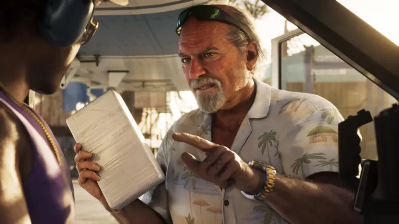
personagem-brian-heder
Original: Brian_Heder_03.jpg (3840×2160) · WebP 1600: 69 KB
Fonte: © Rockstar Games, kit de mídia oficial · rockstargames.com/VI/media · Capturas de tela (138)
alt: Brian Heder de camisa florida e óculos no rosto, apontando para alguém enquanto segura um papel
Veículos 8
veiculo-conversivel
Original: Jason_and_Lucia_11.jpg (3840×2160) · WebP 1600: 79 KB
Fonte: © Rockstar Games, kit de mídia oficial · rockstargames.com/VI/media · Capturas de tela (138)
alt: Jason dirigindo um conversível vermelho com Lucia no banco do passageiro, à beira-mar
veiculo-muscle-car
Original: Vice_City_24.jpg (3840×2160) · WebP 1600: 248 KB
Fonte: © Rockstar Games, kit de mídia oficial · rockstargames.com/VI/media · Capturas de tela (138)
alt: Muscle car rosa com pintura personalizada estacionado numa rua de Vice City, com um rapaz sentado no capô
veiculo-superesportivo
Original: ULTIMATE_EDITION_GROTTI_CHEETAH_01.jpg (3840×2160) · WebP 1600: 123 KB
Fonte: © Rockstar Games, kit de mídia oficial · rockstargames.com/VI/media · Ultimate Edition (51)
alt: Superesportivo Grotti Cheetah branco com faixas vermelhas na frente de um estacionamento circular
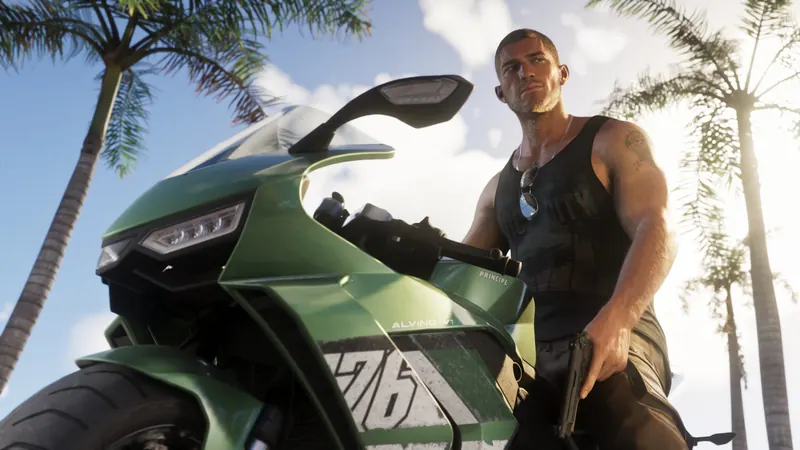
veiculo-moto
Original: Jason_Duval_01.jpg (3840×2160) · WebP 1600: 77 KB
Fonte: © Rockstar Games, kit de mídia oficial · rockstargames.com/VI/media · Capturas de tela (138)
alt: Jason ao lado de uma moto esportiva verde estacionada sob palmeiras
veiculo-lancha
Original: ULTIMATE_EDITION_SQUALO_01.jpg (3840×2160) · WebP 1600: 136 KB
Fonte: © Rockstar Games, kit de mídia oficial · rockstargames.com/VI/media · Ultimate Edition (51)
alt: Lancha Squalo branca cortando a baía ao entardecer, com os prédios de Vice City ao fundo
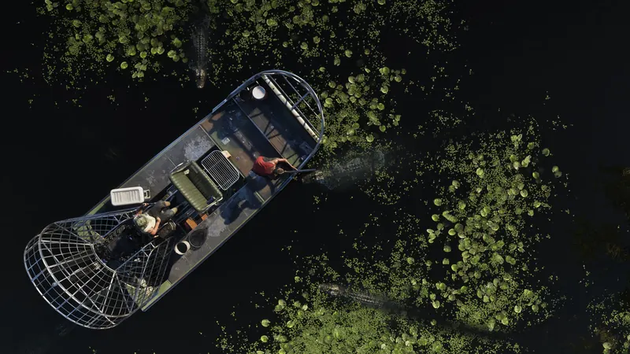
veiculo-aerobarco
Original: Grassrivers_03.jpg (3840×2160) · WebP 1600: 192 KB
Fonte: © Rockstar Games, kit de mídia oficial · rockstargames.com/VI/media · Capturas de tela (138)
alt: Aerobarco visto de cima atravessando a água escura de Grassrivers entre plantas aquáticas
veiculo-picape
Original: Grassrivers_04.jpg (3840×2160) · WebP 1600: 242 KB
Fonte: © Rockstar Games, kit de mídia oficial · rockstargames.com/VI/media · Capturas de tela (138)
alt: Picape atravessando o pântano de Grassrivers perseguida por uma viatura e um helicóptero
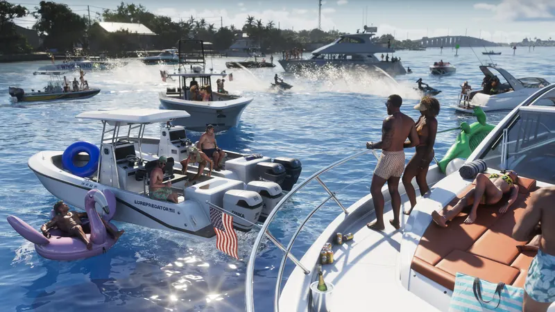
veiculo-jet-ski
Original: Leonida_Keys_05.jpg (3840×2160) · WebP 1600: 171 KB
Fonte: © Rockstar Games, kit de mídia oficial · rockstargames.com/VI/media · Capturas de tela (138)
alt: Jet skis e lanchas reunidos num canal das Leonida Keys, com gente tomando sol nos barcos
Páginas internas 4
pagina-contato-rusty-anchor
Original: Leonida_Keys_03.jpg (3840×2160) · WebP 1600: 238 KB
Fonte: © Rockstar Games, kit de mídia oficial · rockstargames.com/VI/media · Capturas de tela (138)
alt: Bar de praia The Rusty Anchor nas Leonida Keys, com mesas ao ar livre e palmeiras
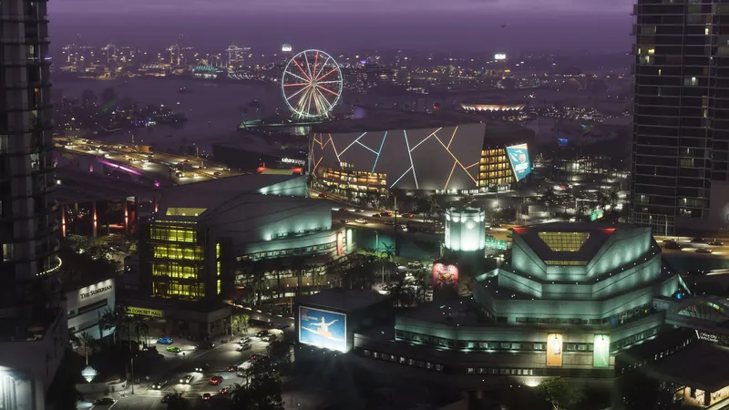
pagina-login-vice-city-noite
Original: Vice_City_08.jpg (3840×2160) · WebP 1600: 138 KB
Fonte: © Rockstar Games, kit de mídia oficial · rockstargames.com/VI/media · Capturas de tela (138)
alt: Vice City à noite com uma roda-gigante iluminada perto da baía
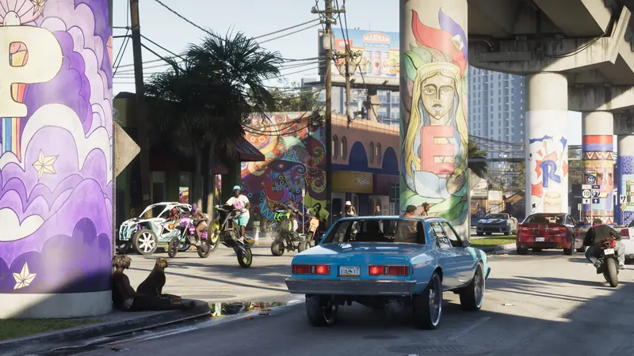
pagina-guia-murais
Original: Vice_City_09.jpg (3840×2160) · WebP 1600: 173 KB
Fonte: © Rockstar Games, kit de mídia oficial · rockstargames.com/VI/media · Capturas de tela (138)
alt: Rua de Vice City sob um viaduto coberto de murais coloridos, com um carro azul e motos
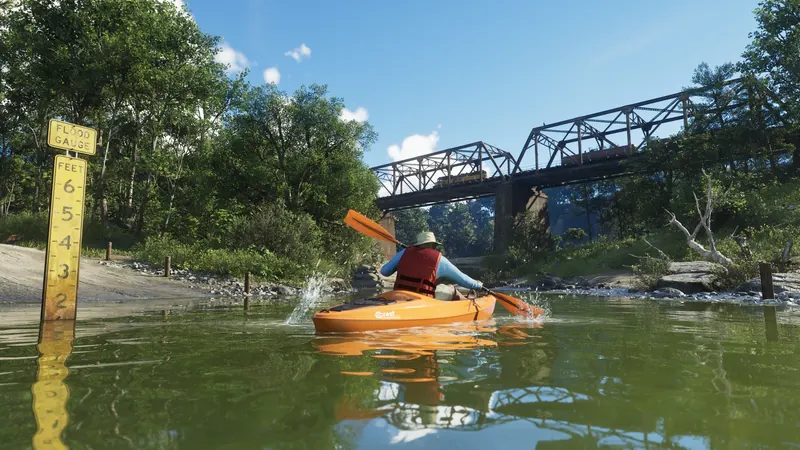
pagina-checklist-caiaque
Original: Mount_Kalaga_National_Park_06.jpg (3840×2160) · WebP 1600: 250 KB
Fonte: © Rockstar Games, kit de mídia oficial · rockstargames.com/VI/media · Capturas de tela (138)
alt: Pessoa remando um caiaque laranja num rio do Mount Kalaga, perto de uma ponte de ferro